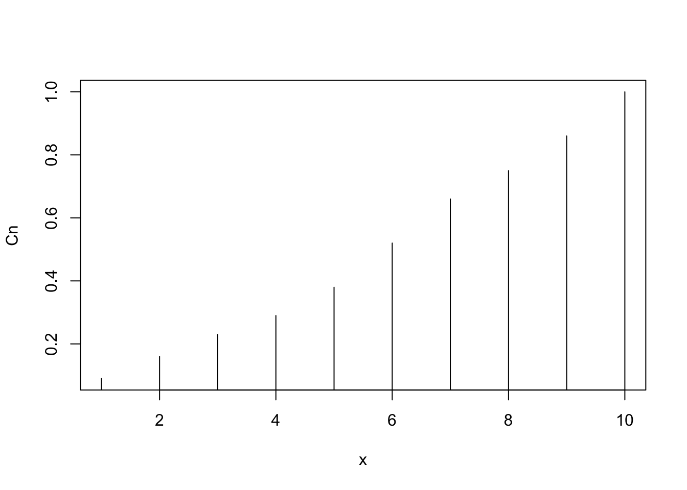
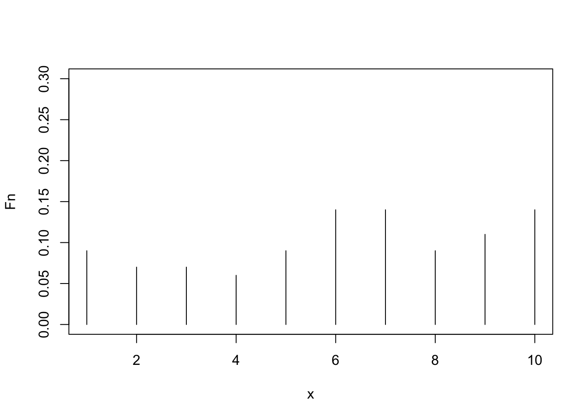
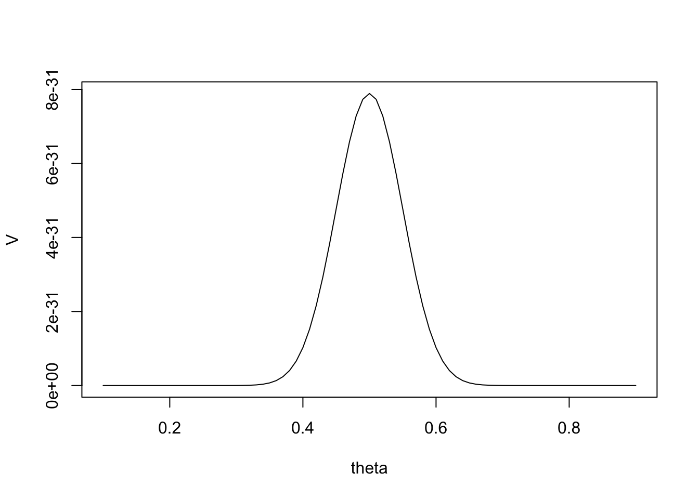
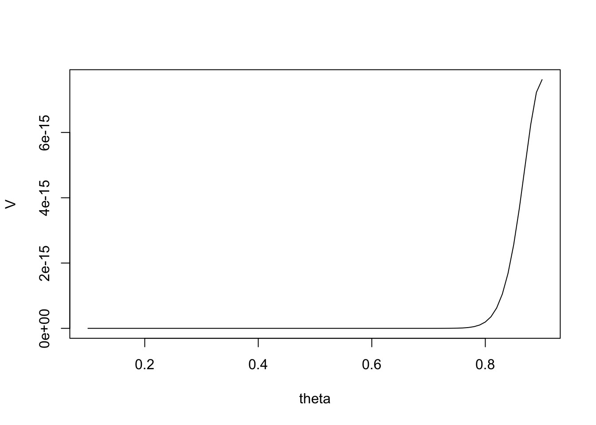
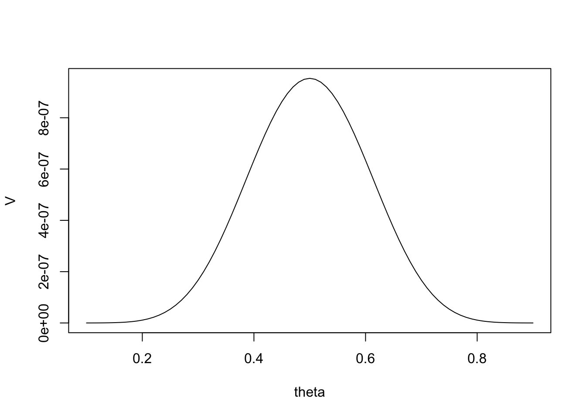

Una macchina produce pezzi difettosi (evento B) con probabilità \(P(B)= 0.001\). Una procedura di controllo scarta pezzi difettosi (evento A condizionato da B) con probabilità \(P(A|B) = 0.9\) mentre scarta pezzi non difettosi con probabilità \(P(A|\bar{B})= 0.01\). Qual’è la probabilità \(P(B|A)\) che un pezzo sia non difettoso dato che è stato scartato?
Dal principio delle probabilità totali (sostituisco P(A)):
rm(list =ls())P_B =0.001#P(B) probabilità di produrre pezzi difettosiP_AcondB =0.9#P(A|B) la prob di scartarlo quando il pezzo è difettosoP_AcondcompB =0.01#P(A|compB) la prob di scartare non difettosi#probabilità che il pezzo scartato fosse difettoso = P(B|A)P_BcondA <- P_AcondB * P_B / ((P_B * P_AcondB) + ((1- P_B) * P_AcondcompB))P_BcondA # =~ 8 %
\({p(x,θ): θ ∈ Θ,x ∈ S}\) per variabili casuali discrete \({f(x,θ): θ ∈ Θ,x ∈ S}\) per variabili casuali continue
Esempio di un modello noto: binomiale
bin <-function(n, k, p) { bin <-choose(n,k)* p ^ (k) * (1- p) ^ (n - k) # con 0 < p < 1 e x=(0,1)return(bin)}bin(10,5,0.2)
[1] 0.02642412
dbinom(5,10,0.2)
[1] 0.02642412
E così anche per Poisson, Normale, esponenziale (ed altre)
Campione casuale
Come generare un campione casuale dato un modello. Le variabili casuali\(X_i \text{ con } i = 1,\ldots,n\) servono per modellare le osservazioni campionarie\(x_i \text{ con } i = 1,\ldots,n\). L’inferenza statistica consiste nel fare congetture sull’incognito vettore di parametri \(\theta = [\theta_1,\ldots,\theta_p]\) basandosi su una realizzazione campionaria \([x_1,\ldots,x_n]\).
La definizione di campione casuale da un modello statistico formalizza che lo stesso fenomeno ripetibile con risultato incerto viene osservato n volte (le n variabili casuali campionarie con la stessa funzione di ripartizione) e che le n osservazioni sono ottenute in modo in- dipendente (la condizione di indipendenza in probabilità delle n variabili casuali campionarie).
set.seed(1)x <-sample(1:10, 100, replace = T) #da un uniforme discreta
Una funzione delle sole variabili casuali campionarie è chiamata statistica. Le statistiche sono uno degli strumenti di base utilizzati nell’ineferenza statistica. Se usate in un problema di stima puntuale le statistiche prendono il nome di stimatori se usate in un problema di verifica di ipotesi vengono chiamate statistiche test.
Stima puntuale
Media campionaria
somma <-sum(x)somma_cumulata <-cumsum(x)n <-length(x)media_campionaria <- somma / nmu <- media_campionariamu
[1] 6.06
mean(x)
[1] 6.06
Varianza campionaria
n ^-1*sum((x - mu) ^2)
[1] 8.0564
var(x)
[1] 8.137778
Varianza campionaria corretta
(n -1) ^-1*sum((x - mu) ^2)
[1] 8.137778
var(x)
[1] 8.137778
frequenza cumulata relativa campionaria
X <-seq(1, 10, 1)Cn <-c()for (i in X) { Cn <-c(Cn, n ^-1*sum(x <= i))}plot(Cn,type ="h",xlab="x")

frequenza relativa campionaria
Fn <-c()for (i in X) { Fn <-c(Fn, n ^-1*sum(x == i))}plot(Fn,ylim =c(0,0.3),type ="h",xlab="x")

Funzione di verosimiglianza
La funzione di probabilità congiunta delle variabili casuali campionarie è definitita come:
ovvero il prodotto delle singole probabilità. Vediamo un esempio:
V<-c() #initializationtheta.s <-seq(.1,.9,.01)for (theta in theta.s) { V <-c(V,prod(rep(bin(1,1,theta),50),#successirep(bin(1,0,theta),50)#insuccessi ))# print(V[length(V)])}plot(y=V,x=theta.s, xlab="theta",type ="l")

Aumentiamo il numero dei successi
V<-c() #initializationtheta.s <-seq(.1,.9,.01)for (theta in theta.s) { V <-c(V,prod(rep(bin(1,1,theta),90),#successirep(bin(1,0,theta),10)#insuccessi ))# print(V[length(V)])}plot(y=V,x=theta.s, xlab="theta",type ="l")

90/100
[1] 0.9
Diminuiamo la numerosità del campione
V<-c() #initializationtheta.s <-seq(.1,.9,.01)for (theta in theta.s) { V <-c(V,prod(rep(bin(1,1,theta),10),#successirep(bin(1,0,theta),10)#insuccessi ))# print(V[length(V)])}plot(y=V,x=theta.s, xlab="theta",type ="l")

Log-verosimiglianza
Spesso si usa la versione logaritmica per rendere il calcolo più agevole, chiamata funzione di log-verosimiglianza: \(L(\theta) = ln(p(x_1,\theta) \times \ldots \times p(x_n,\theta)) = ln(p(x_1,\theta) + \ldots + ln(p(x_n,\theta) = \sum_{i=1}^n ln(p(x_i,n))\)
L<-c() #initializationtheta.s <-seq(.1,.9,.01)for (theta in theta.s) { L <-c(L,sum(log(rep(bin(1,1,theta),50)),#successilog(rep(bin(1,0,theta),50))#insuccessi ))# print(V[length(V)])}plot(y=L,x=theta.s, xlab="theta",type ="l")
Il valore atteso deve coincidere con la stima ### Consistenza Ovvero la probabilità di un errore di stima grossolano deve tendere a zero al di- vergere della numerosità campionaria n ### Efficienza La varianza dev’essere la minore possibile (per approf Teorema di Cramer-Rao)
La media campionaria è uno stimatore corretto e consistente!
mpg cyl disp hp
Min. :10.40 Min. :4.000 Min. : 71.1 Min. : 52.0
1st Qu.:15.43 1st Qu.:4.000 1st Qu.:120.8 1st Qu.: 96.5
Median :19.20 Median :6.000 Median :196.3 Median :123.0
Mean :20.09 Mean :6.188 Mean :230.7 Mean :146.7
3rd Qu.:22.80 3rd Qu.:8.000 3rd Qu.:326.0 3rd Qu.:180.0
Max. :33.90 Max. :8.000 Max. :472.0 Max. :335.0
drat wt qsec vs
Min. :2.760 Min. :1.513 Min. :14.50 Min. :0.0000
1st Qu.:3.080 1st Qu.:2.581 1st Qu.:16.89 1st Qu.:0.0000
Median :3.695 Median :3.325 Median :17.71 Median :0.0000
Mean :3.597 Mean :3.217 Mean :17.85 Mean :0.4375
3rd Qu.:3.920 3rd Qu.:3.610 3rd Qu.:18.90 3rd Qu.:1.0000
Max. :4.930 Max. :5.424 Max. :22.90 Max. :1.0000
am gear carb
Min. :0.0000 Min. :3.000 Min. :1.000
1st Qu.:0.0000 1st Qu.:3.000 1st Qu.:2.000
Median :0.0000 Median :4.000 Median :2.000
Mean :0.4062 Mean :3.688 Mean :2.812
3rd Qu.:1.0000 3rd Qu.:4.000 3rd Qu.:4.000
Max. :1.0000 Max. :5.000 Max. :8.000